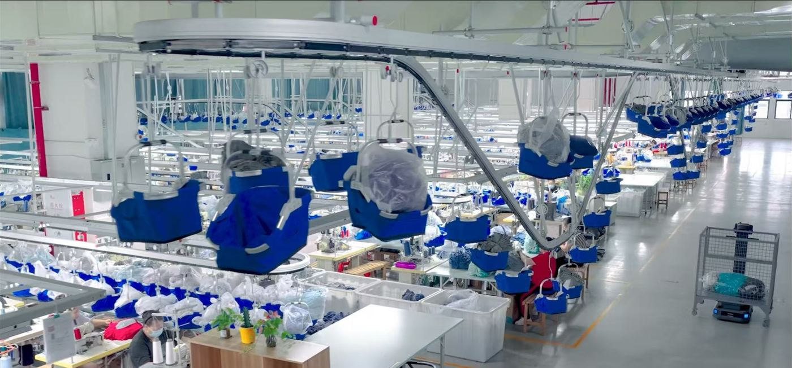
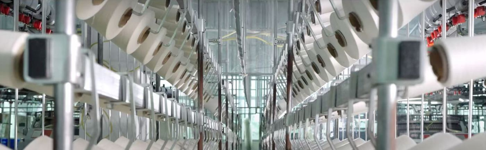
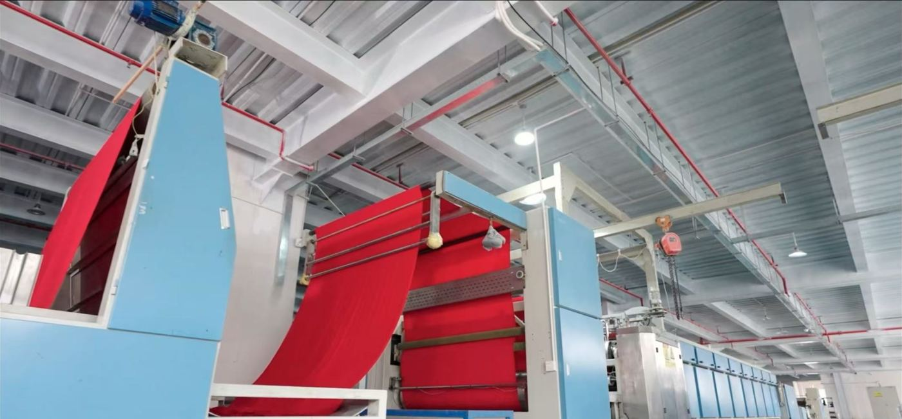
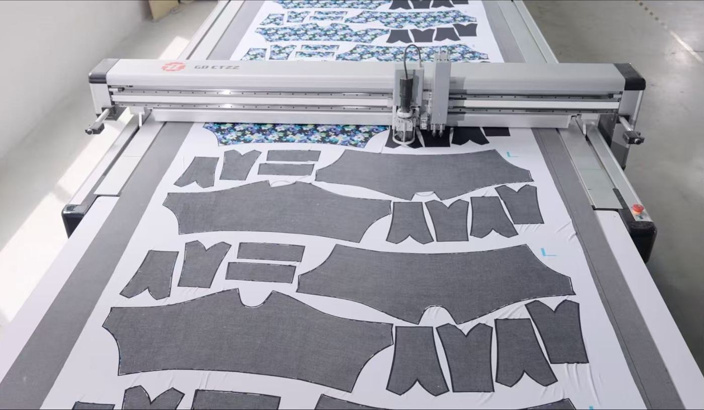
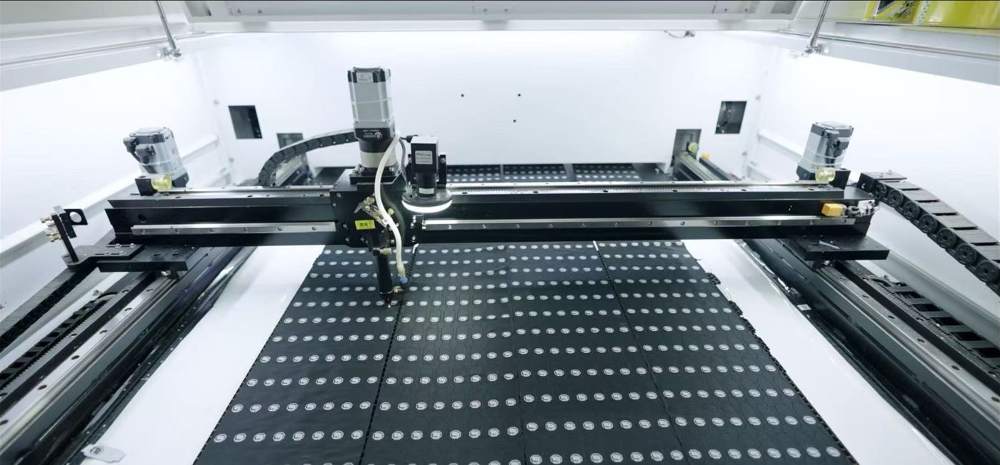
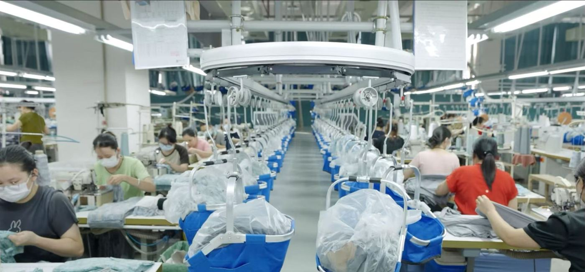
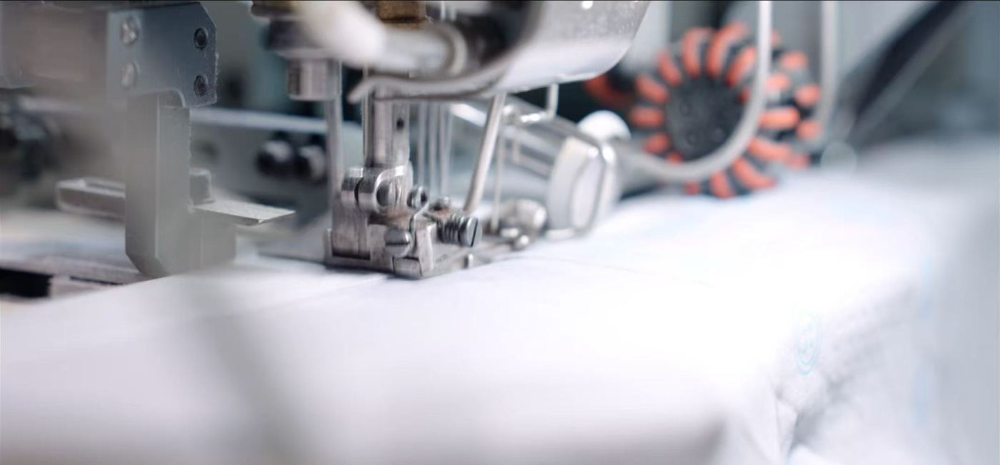
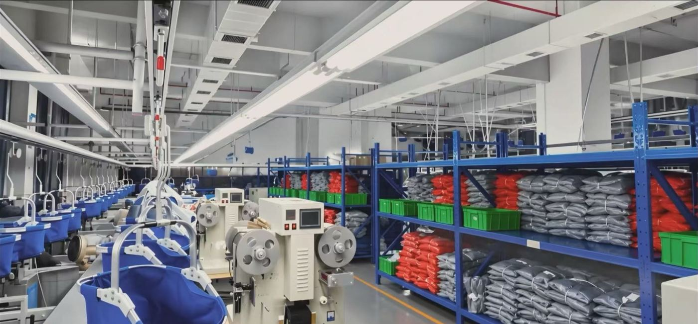
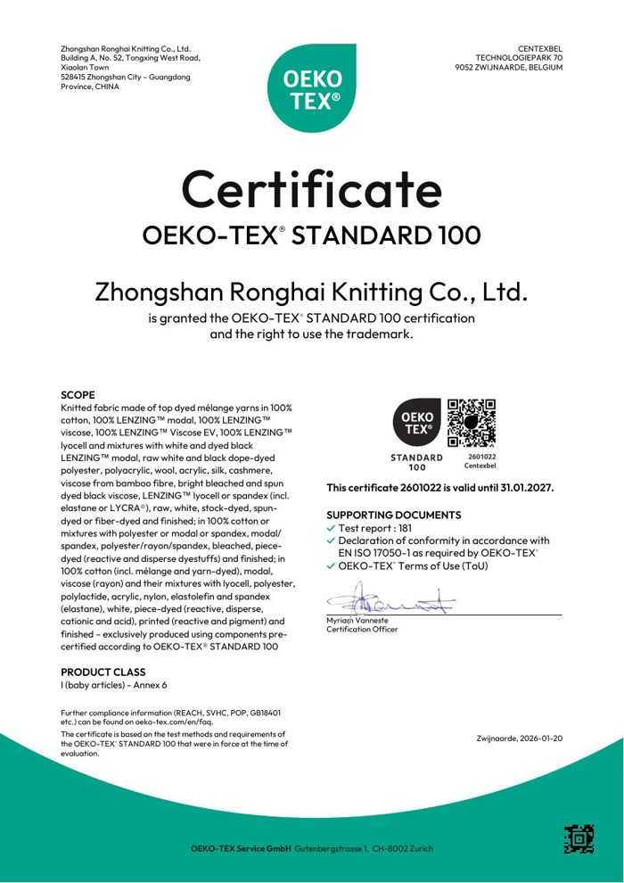

Private-label underwear · Zhongshan, Guangdong
Your underwear line, made to spec at factory scale.
Shanghai Lion Industry develops and produces men's, women's and thermal underwear for brands and retailers. Fabric knitting, dyeing, cutting, seamless bonding, sewing and packing all happen inside one integrated supply chain, so you get one quote, one schedule and one team to talk to.

- Bulk lead time
- 35 days
- Rush (in-stock)
- 48 h
- Inspection
- AQL 2.5
- Style changeover
- 2 h
Figures as stated by our production partner for its group operations.
Three ways to work with us
Start from your tech pack, our styles, or our stock.
Every program includes your own labels and packaging. Minimum order depends on the style and fabric; tell us your quantities per style and color and we will quote against them.
Made to your design
- Built from your tech pack, size spec and reference samples
- Fabric sourced or knitted to your composition and weight
- Custom jacquard or printed waistband, woven or heat-transfer labels
- Fit samples and pre-production approval before bulk
Best for brands with an existing line
Developed styles, your brand
- Choose from 100+ developed bases for men, women and thermal
- Change fabric, color, waistband, gusset and leg length
- Our design team adapts patterns to your market's sizing
- Faster to launch: patterns and fabrics are already proven
Best for new lines and private label
Ready programs
- More than 100 best-selling styles held in stock
- Your label and packaging added before dispatch
- Urgent orders out in as little as 48 hours
- Good for test orders and marketplace launches
Best for speed and small first orders
ODM style library
Base styles ready to brand.
A selection from the current library. Each base can change fabric, color, waistband and packaging. Select a color dot to see another colorway.
Product photos show developed samples. Retail claims such as antibacterial grades depend on the final fabric and finish and are confirmed by test report for your order.
From yarn to carton
One supply chain, seven stages, under one roof.
Fabric, trims and garments are made inside the same group. That keeps cost down, keeps fabric traceable to the lot, and means a delay in one department is visible to the next.

Knitting
Circular knitting of modal, cotton, nylon and blended jersey and rib from cone yarn.

Dyeing & finishing
Dyeing, compacting and large pre-shrinkers to hold dimensions after washing.

Automatic cutting
Three 150-metre automatic cutting beds, cutting to ±0.1 mm.

Laser & bonding
Laser-cut edges, perforation and bonded seams for seamless styles.

Sewing
Automated machines with needle positioning and thread trimming; a hanging system moves bundles so goods never touch the floor.

Trims & labels
Jacquard and printed waistbands, heat-transfer labels and narrow-fabric weaving in house.

Packing & warehouse
Folding, bagging, boxing and carton packing to your packing list, with AGV transport and MES tracking on the floor.
Fabric library
Fibers we run every week.
Compositions below are taken from current production styles. Other blends, weights and finishes are available on request.
| Fiber | Typical composition | Where we use it | Hand & performance |
|---|---|---|---|
| Lenzing modal | 60S · 89/11 modal/spandex | Women's briefs, men's trunks | Soft, cool drape, stable color after washing |
| Mulberry silk | 86/14 silk/spandex · silk gussets | Premium briefs, gusset linings | Smooth, breathable, premium price point |
| Supima cotton | 60S long-staple cotton | Everyday briefs | Fine, strong yarn; less pilling than standard cotton |
| Lyocell-modal rib | 80S rib knit | Rib briefs | Light, elastic rib with a matte finish |
| Nylon "ice silk" | 73/27 nylon/spandex · 120-count | Seamless and summer boxers | Cool touch, quick dry, very thin |
| PLA fiber | Polylactic-acid gusset | Women's briefs | Plant-based fiber, moisture-wicking |
| Combed cotton | 95% cotton | Thermal sets | Warm, breathable base layer |
| Cashmere blend | Brushed · 280 g/m² | Men's thermal sets | Brushed interior with heat-retaining acrylic |
How an order runs
Six steps from brief to shipment.
Sampling time depends on whether a style is new or adapted from our library; we confirm it with the quote.
Brief
Send your tech pack, a reference sample or the styles you picked from our library.
Quote in writingFabric & trims
We send swatches, lab dips and waistband options for approval.
Swatch cardsSampling
Fit samples, then a pre-production sample in final fabric and labels.
PP sample sign-offBulk
Production starts after deposit and PP approval, with regular progress updates.
35 days typicalInspection
In-line and final inspection; third-party inspection welcome.
AQL 2.5Shipping
Cartons packed to your list; sea or air freight arranged from South China.
FOB / CIFWhy buy through Lion
One contact who knows the factory floor.
- Quotes, samples and contracts handled in English or Chinese
- We follow sampling and bulk progress with the factory and report back to you
- Pre-shipment checks against your approved sample
- Freight booking, export documents and customs paperwork
- Offices in Shanghai and Los Angeles
- Exporting from China to buyers worldwide since 2002
Compliance & quality
Audited, certified and inspected.
Copies of certificates and the full audit report are sent to buyers on request.

Fabric certification
OEKO-TEX® STANDARD 100
- Holder
- Zhongshan Ronghai Knitting Co., Ltd. (fabric mill)
- Certificate
- 2601022
- Product class
- I (articles for babies, the strictest class)
- Scope
- Knitted fabrics in cotton, Lenzing modal, viscose, lyocell, polyester, nylon, silk, wool and spandex blends; dyed and printed
- Issued by
- Centexbel, Belgium
- Valid until
- 31.01.2027
Social compliance
amfori BSCI social audit
- Site
- Zhongshan Zhuoyue Garments Co., Ltd., Xiaolan Town, Zhongshan
- Monitoring ID
- 26-0438042
- Audit
- Full monitoring, semi-announced, 19–21 Oct 2026
- Auditor
- Bureau Veritas
- Valid until
- 28.10.2027
Request a quote
Tell us what you want to make.
Fill in what you know. The form puts your request together; send it to us on WhatsApp or by email and we reply with questions or a first quote.